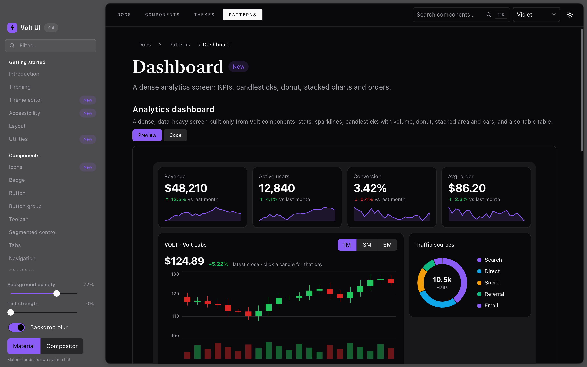
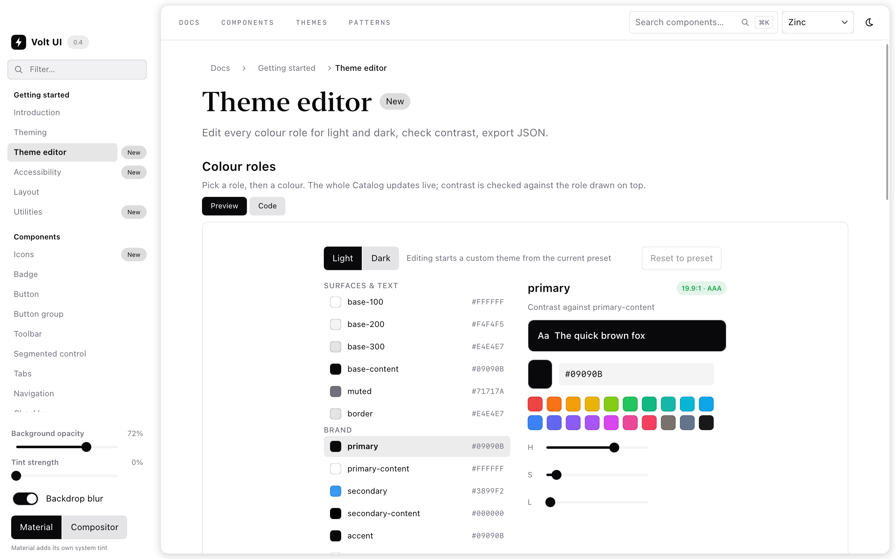

A native UI toolkit for Rust
Build native interfaces
in Rust.
A Rust UI toolkit for expressive, GPU-rendered desktop applications.

Native Catalog capture, surrounded by illustrative component studies.
Declare it in Rust.
Ordinary functions and typed closures.
No new language between you and your UI.
Draw it natively.
Vello on wgpu, with a software fallback.
Native pixels, not a browser in a box.
Keep your own style.
Color, type, spacing, corners and motion.
A toolkit, not a prescribed look.
The building blocks
The details
make the difference.
Quiet borders. Thoughtful spacing. Just the right corner. Build an interface that feels considered, all the way down.
Buttons and fields, menus and dialogs, tables and trees. Compose them your way, with real Rust callbacks behind every interaction.
Meet the componentsA little more
you.
Good interfaces don't all have to look the same.
Appearance settings
A web illustration of palettes and composition, not the native renderer. Run the Catalog to explore the Rust components.
// Your app state. No framework magic.
use volt_ui_kit::{native::Application, ui::prelude::*};
#[derive(Default)]
struct App { count: u32 }
fn view(app: &App) -> Element<App> {
vstack![
text(format!("Count: {}", app.count))
.font_size(24.),
button("Add one")
.key("add")
.variant(ButtonVariant::Primary)
.on_click(|app: &mut App| app.count += 1),
]
.padding(24., Edge::All)
.gap(12., Axis::Vertical)
.into()
}
fn main() -> Result<(), Box<dyn std::error::Error>> {
Application::new("Counter", App::default(), view).run()
}Less ceremony. More making.
A view is
just a function.
Your state goes in. A tree of elements comes out. When something happens, a Rust closure changes your state and the view is recomposed.
Use the tools you already know: functions, types, conditionals, loops and the compiler.
- Typed callbacks over your own app state
- Stable keys for focus and composition
- No webview needed for native drawing
The native Catalog
Not just a pretty example.
A place to try everything.
Explore components, read their source, and find your app's look. This is the toolkit running as a native Rust application.

Take it for a spin
Your first window
starts here.
Clone the repo and run the Catalog. Find a component you like, inspect its declaration, and make something of your own.
Read the quick startRust 1.89+ required. Not yet on crates.io.
git clone https://github.com/danieldear/volt-ui-kit
cd volt-ui-kit
cargo run --release --locked \
--features native-gpu,native-desktop \
--example catalogPrefer your own app? Start with the project templates. Pin a reviewed Git revision for reproducible builds.
A little direction.
A lot of possibility.
From your first stack to the finer details.
Source-backed guides, right here in the docs.
Getting started
Features, a first window and app templates.
Building interfaces
State, callbacks, layout and responsive views.
Components
Controls, navigation, data views and charts.
Styling and themes
Type, color, effects, icons and motion.
Windows and rendering
GPU drawing, chrome, transparency and blur.
Application services
Commands, files, menus and packaging.
Optional JSON frontend
Data-only declarations. Rust-owned behavior.
Under the hood
Architecture, input and resource boundaries.
Built in the open.
Still taking shape.
Pre-1.0, with room to grow. macOS is the primary native platform; APIs can change before 1.0.
Follow the roadmap- macOS
- PrimaryApple silicon / Metal tested
- Windows & Linux
- In progressCross-compilation checked; native runtime acceptance pending
- WebAssembly
- Core onlyNo browser host yet
- iOS & Android
- Not yetNo mobile host
Start with a window.
Make it your own.
Build with Volt Open source. MIT licensed. Yours to build on.